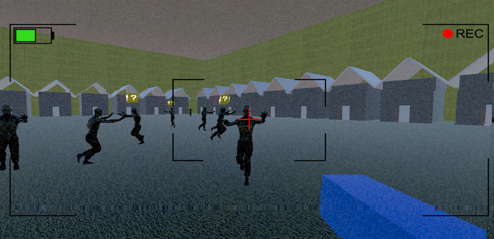

Zombie Raid
I built a 3D first person shooter game using the Unity Engine with a team of 3 other students. We worked on this project for about 4 months, focusing on developing advanced components such as AI navigation using nav mesh agents, camera filters, projectiles that can be shot by the player, and more. Our AI enemies took the form of zombies and we messed around with their line of sight to make the game more realistic. This allowed the player to hide behind obstacles and really feel immersed in this zombie apocalypse survival game that we had created.
